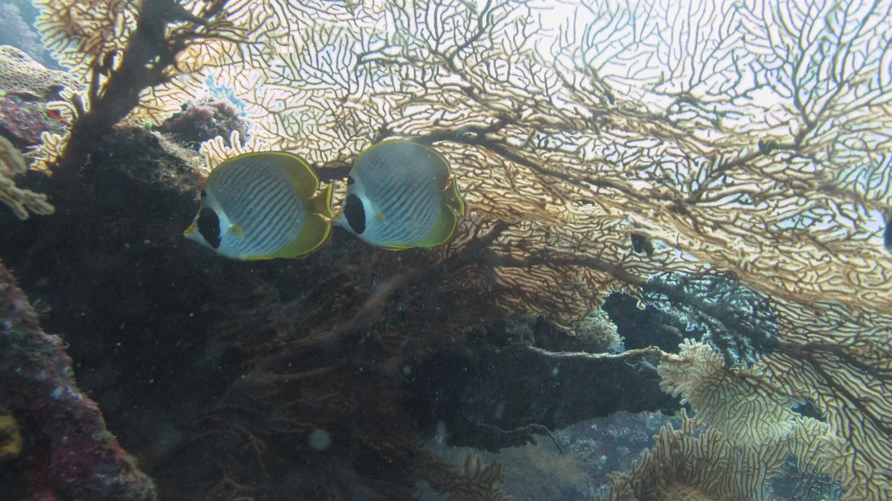
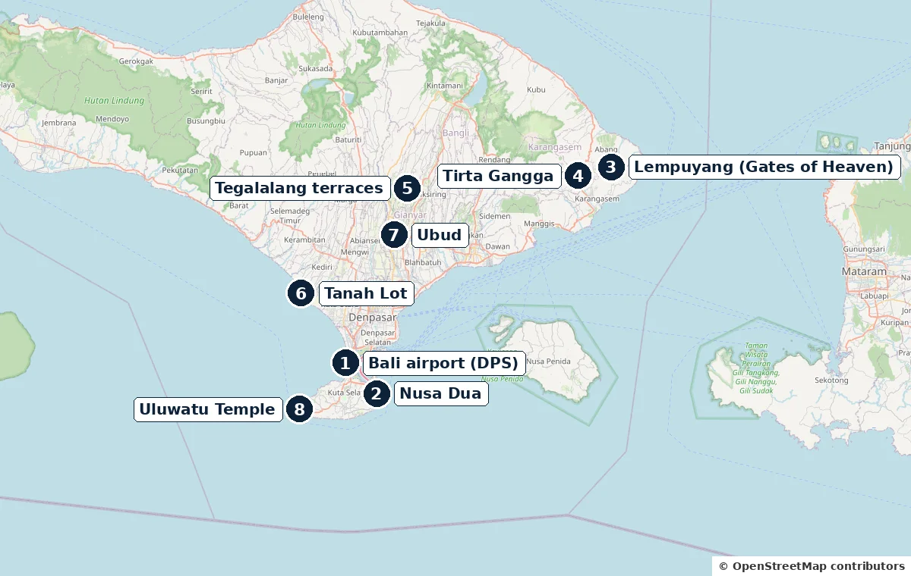

A slow, romantic week that pairs a honeymoon suite in Nusa Dua with Bali's most photogenic temples, a sunset at Tanah Lot, your first scuba dive and a private candlelight dinner in an Ubud garden. Every transfer is private, and every day is paced around Bali's traffic and temple timings, so you spend your time together and not in a car.
See it for yourself
Photos from the journey





Where you go
The journey on one map

Bali airport (DPS)Nusa DuaLempuyang (Gates of Heaven)Tirta GanggaTegalalang terracesTanah LotUbudUluwatu Temple
Day by day, in short
Daily travel brief
Distances are by road for the whole day. The full plan with timings comes with your detailed itinerary.
-
1
Land in Bali and settle into your honeymoon suite
- Your driver waits in arrivals with a name sign.
- Do the e-VOA and the tourist levy online before you fly to skip the counters.
-
2
East Bali: the Gates of Heaven, the water palace and the rice terraces
Lempuyang (Gates of Heaven) Tirta Gangga Goa Raja Waterfall Tegalalang terraces
- Lempuyang: the Gates of Heaven photo is by queue number, so the early start matters.
- Temples: covered shoulders and a sarong for everyone.
- Goa Raja Waterfall has wet steps: wear shoes with grip.
-
3
A slow morning, then Tanah Lot at sunset
- Tanah Lot: only worshippers may climb the temple rock. At low tide you can reach its base for a blessing.
- Watch the sunset from the cliff-top cafés.
-
4
Your first dive: Discover Scuba
- No experience needed. Your instructor stays beside you.
- Tell us about any medical condition before booking. No flying for 18 hours after.
-
5
Ubud's culture by day, a candlelight dinner by night
Monkey Forest Ubud Art Market Ubud Palace
- Monkey Forest: keep sunglasses, earrings and phones out of sight.
- Art Market: bargaining is expected.
- Candlelight dinner for two from 18:00.
-
6
A day for the two of you, or Uluwatu's fire dance
- Uluwatu entry and the Kecak dance are paid in cash or QRIS.
- Arrive by about 16:30 to 17:00 for a good seat at the fire dance.
-
7
Breakfast, check-out and the flight home
- Be at the airport 3 hours before your flight.
- Ask for a late check-out if you fly in the evening.
Local know-how
Travel hacks from our desk
Hotel deposit
Use a credit card for the deposit or pre-authorisation at check-in, never a forex or debit card. Forex cards cannot hold funds, hotels often refuse them, and a credit card hold is released faster and more safely.
Cards and cash
On card machines, always choose to pay in Indonesian rupiah, never in INR or USD. Carry cash for temples, donations, markets and small cafés: about IDR 500,000 a day for two is plenty. Exchange at authorised money changers or use bank ATMs inside malls and hotels.
Tipping
Many restaurants add a 5 to 10% service charge. Round up for drivers and guides at the end of a good day. It is appreciated, not expected.
Temple dress code
Covered shoulders and knees, with a sarong and a sash at the waist. Do not stand higher than the priest, step over offerings on the ground or point your feet at shrines.
Monkeys and pickpockets
Hold on to glasses, phones and earrings at Uluwatu and the Ubud Monkey Forest. Bag snatching from scooters happens in Kuta and Seminyak: walk with your bag on the side away from the road.
Plugs, water and meal times
Plugs are the two round-pin type C and F, at 230 volts. Indian three-pin plugs need an adaptor. Drink bottled or filtered water only, including for brushing teeth. Dinner runs from about 18:00 to 22:00.
Days to avoid
Nyepi, Bali's Day of Silence, closes the airport, roads and beaches for 24 hours. In 2027 it falls on Monday 8 March. We plan around it.
When to go
Best time to visit for this journey
May, June and September: dry, sunny days and calm seas, without the July and August crowds.
April to October is the dry season, with sunny days and calm seas for the beaches, temples and diving. November to March is the wet season: greener and quieter, with short tropical showers, usually in the afternoon. Avoid Nyepi, Bali's Day of Silence in March, when the airport and roads close for 24 hours.
The package
What's included
Included
- 6 nights in a Honeymoon Suite, half board
- Private SUV airport transfers on arrival and departure
- Private East Bali photo tour with guide and entrance fees
- Tanah Lot sunset tour with entrance fee
- Discover Scuba Dive with equipment and instructor
- Candlelight dinner for two in Ubud
- Itinerary planning, bookings and 24/7 support from Blue Diamond Voyage
Not included
- International flights (we can quote from India, the UK or anywhere else)
- Indonesia visa on arrival or e-VOA fee, and the Bali tourist levy
- Sarong donation, jungle swings, rice-terrace donations and personal expenses
- Ubud Monkey Forest entry and the optional Uluwatu evening
- Lunches and drinks unless stated
- Travel insurance (strongly recommended)
The detailed itinerary
Some journeys are planned. Ours are crafted.
The full 7-day plan is ready: hour-by-hour timings, drive times, temple dress codes, food for your diet and a route map for every day. Tell us your dates and your city, and we'll send it to you on WhatsApp, shaped around you.
- Hour-by-hour timings
- A route map for every day
- Hotel and room details
- Visa and entry steps
- Vegetarian and Jain dining
24/7 travel desk+91 97148 59797+91 98242 21400
Photo and map credits
- Sunset over Nusa Dua beach: GdML, CC BY-SA 4.0, via Wikimedia Commons
- Lempuyang, the Gates of Heaven: Flickr user: yeowatzup, CC BY 2.0, via Wikimedia Commons
- Tanah Lot sea temple: Jakub Hałun, CC BY-SA 4.0, via Wikimedia Commons
- Coral and reef fish: Tilonaut, CC BY 3.0, via Wikimedia Commons
- Ubud Monkey Forest: Jakub Hałun, CC BY-SA 4.0, via Wikimedia Commons
- Uluwatu, the cliff-top temple: Ken Eckert, CC BY-SA 4.0, via Wikimedia Commons
- Maps: © OpenStreetMap contributors; road routes by OSRM.